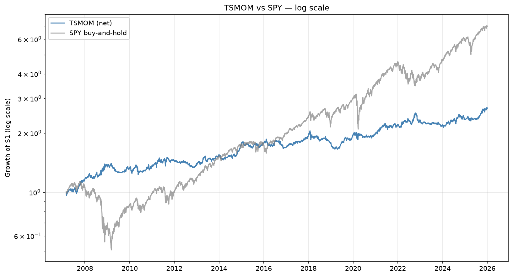
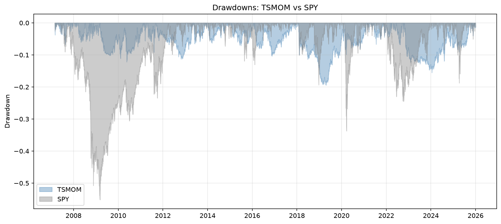
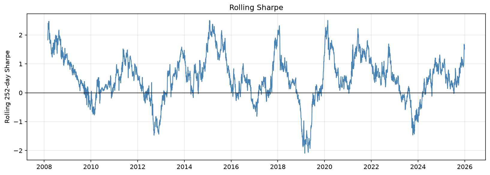
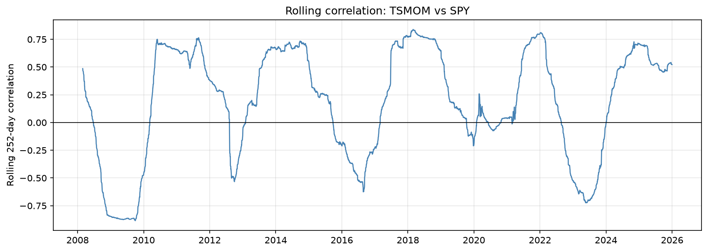

Quantitative Finance
Time-Series Momentum on ETFs
Building and testing a trend-following strategy in Python, and measuring honestly how much of the result is real.
Overview
In this project, I built and backtested a trend-following strategy based on the time-series momentum framework of Moskowitz, Ooi, and Pedersen (2012). It goes long or short eight ETFs spanning equities, bonds, gold, commodities, and real estate, depending on whether each one has been rising or falling, and sizes each position by its recent volatility.
I did not expect it to beat the stock market, and it doesn't. What I wanted was a strategy whose risk-adjusted return is comparable to SPY's but whose returns arrive at different times, plus a rigorous answer to the question that matters most in backtesting: how much of this is real?
The Idea
Time-series momentum says that an asset's own recent return helps predict its near-future return: assets that have been rising tend to keep rising for a while, and assets that have been falling tend to keep falling. A trend follower buys the first group and sells short the second.
Time-series vs. cross-sectional momentum. Cross-sectional momentum ranks assets against each other and buys the winners and shorts the losers. Time-series momentum ignores the other assets: each one is judged only against its own past, so in a falling market the strategy can be short everything.
Proposed explanations include investors reacting slowly to news and herding into trends. I take these as plausible, not proven.
Design
- Data. Daily adjusted closes from Yahoo Finance for SPY, EFA, EEM, TLT, IEF, DBC, GLD, and VNQ (adjusted prices include dividends and splits). The backtest starts on 2007-02-28, the first day every ETF has a 12-month signal and a volatility estimate, and runs through 2025.
- Signal. At each month-end, take the sign of each ETF's past 6-month and 12-month return and average them. Both up gives +1, both down gives −1, and disagreement gives 0 (flat).
- Sizing. Scale each position to a 20% volatility target: size = 0.20 / trailing 60-day volatility, capped at 2× leverage. A quiet asset at 6% volatility would want 3.3× but is capped at 2×; a 16% volatility ETF gets 1.25×.
- Timing. Decide at the month-end close, hold until the next month-end, and earn returns from the following day.
- Costs. 5 basis points (0.05%) for every dollar traded.
- Portfolio. Average the eight positions. Each ETF targets 20% volatility, but diversification brings the portfolio down to about 9.7%.
Volatility targeting. Instead of putting equal dollars in each asset, size each position inversely to its recent volatility so every asset contributes roughly the same risk. Without it, a single volatile asset (say, emerging markets) would dominate the portfolio.
Look-ahead bias. The most common way for a backtest to be fooled is to use information that would not have been available at the time. Here the signal uses prices up to the month-end close, volatility is lagged one day, and a position only earns returns from the next day. An early version applied the signal a full month late because of an extra shift. It was a lag rather than a leak, but I only caught it by testing on a synthetic price series with a known turning point.
Measuring Performance
Sharpe ratio. Average daily return divided by its standard deviation, multiplied by √252 (the number of trading days in a year) to annualize it. It measures return per unit of risk. I did not subtract the cash rate, which flatters it a little.
Maximum drawdown. The largest peak-to-trough fall in cumulative value. It is the worst loss an investor who bought at the top would have sat through. Calmar is annual return divided by that number.
Results
| 2007–2025 | TSMOM | SPY |
|---|---|---|
| Annual return (CAGR) | 5.34% | 10.85% |
| Annual volatility | 9.65% | 19.81% |
| Sharpe ratio | 0.59 | 0.62 |
| Max drawdown | −19.4% | −55.2% |
| Calmar | 0.28 | 0.20 |
| Beta to SPY | 0.008 | 1.00 |
The strategy does not beat SPY in absolute return. It has a similar Sharpe with about half the volatility and about a third of the worst drawdown. In 2008, SPY lost 36.8% while the strategy gained 17.6%, and in 2022 it gained 5.3% while SPY lost 18.2%.


Is the Result Real?
Beta and alpha. Regress the strategy's
daily returns on SPY's: strategy = alpha + beta × SPY + noise.
Beta is how much the strategy moves with the stock market
(1.0 would mean it moves one-for-one). Alpha is the average
return left over once that market exposure is removed.
t-statistic. Estimate divided by its standard error. Above about 2 means it is unlikely to be chance. I used Newey–West standard errors, which allow for returns being correlated from one day to the next.
Beta came out at 0.008 (t = 0.3), indistinguishable from zero, and SPY explains less than 0.1% of the strategy's variance. Alpha was 5.58% a year with a t-statistic of 2.58. Two caveats matter. Because beta is almost zero, alpha is nearly the same as the strategy's average return, so this is the Sharpe ratio's evidence again, not a second confirmation. And it is alpha relative to SPY only: the strategy also holds bonds, gold, and commodities, which SPY doesn't capture.
Bootstrap confidence interval. A Sharpe estimated from one 19-year history is a single draw. To see how much it could vary, I resampled the daily returns in 21-day blocks (so volatility clustering is preserved) 2,000 times and recomputed the Sharpe each time. The middle 95% of those values is the interval.
The result is a 95% interval of 0.18 to 1.00. That is wide: nineteen years of data cannot tell a true Sharpe of 0.3 from 0.9. The interval stays above zero, but I would not claim more than “positive and suggestive.”
Does It Depend on One Era?
Not obviously. The Sharpe is 0.58 in 2007–2019 and 0.60 in 2020–2025, with identical CAGR (5.34%) in both. The year-to-year picture is far noisier: the rolling one-year Sharpe ranges from about −2 to +2.5. The worst calendar years were 2018 (−9.2%), 2023 (−5.2%), 2012 (−4.7%), 2016 (−4.6%), and 2009 (−3.7%). Some of these followed sharp trend reversals, which would hurt a trend follower, but I did not test that explanation.

Its two deepest drawdowns (about −19% in 2018–2019 and −15% in 2022–2024) each took roughly three years to recover. That is far shallower than SPY's, but it is a long time to be below a previous high.
Is It Really Uncorrelated?
The full-sample correlation to SPY is 0.02, but that is an average of very different regimes. The rolling one-year correlation reaches about +0.8 in sustained bull markets (2018, 2021–22), when the strategy is long equities, and about −0.9 in 2008–09. So “uncorrelated” is true on average, not at every moment. Negative-correlation windows also include rebounds, which hurt: the strategy lost 3.7% in 2009 while SPY gained 26.4%.

During SPY drawdowns deeper than 10% (27.5% of days), the strategy returned +1.3% annualized while SPY lost 13.3%. Outside them, SPY compounded at 21.7% and the strategy at 6.9%. That is the trade: give up upside in bull markets, avoid most of the damage in crashes. Mixing 80% SPY with 20% strategy raises the Sharpe from 0.62 to 0.68 and cuts the max drawdown from −55.2% to −43.2%. At 60/40 it is 0.77 and −29.7%, at the cost of lower return (CAGR 9.2% vs 10.9%).
Robustness and Sanity Checks
- Costs. The Sharpe falls gently as costs rise: 0.62 at 0 bps, 0.59 at my 5 bps assumption, and 0.51 at 20 bps. Monthly rebalancing keeps trading low. Resizing daily, which an early version did by accident, gave the same Sharpe at higher cost.
- Parameters. I tried 20 combinations of signal horizons and volatility windows. Sharpe ranged from 0.42 to 0.61 and my chosen setting (0.59) was not the best, so it wasn't cherry-picked. Variants adding a 1-month horizon were consistently lowest (0.42–0.48). I treat the plateau, not a single peak, as the evidence.
- Random-walk test. If the pipeline has no look-ahead bias, running it on pure noise should earn nothing on average. Across 20 zero-drift random-walk datasets the mean Sharpe was +0.009 (standard error 0.042).
- Where the returns come from. SPY 25.8%, GLD 22.7%, DBC 14.2%, EEM 9.8%, IEF 9.3%, EFA 7.5%, VNQ 5.7%, TLT 4.9% of gross profit. Bonds are only about 14%, so inverse-volatility sizing did not turn it into a rates bet, but SPY and gold together are nearly half.
Limitations
- No financing cost on leverage and no borrow cost on shorts, so results are slightly optimistic.
- The ETF basket was chosen with hindsight. An 11-ETF version scored Sharpe 0.56.
- Sharpe is not excess-of-cash. With cash rates averaging very roughly 1.5%, it would be about 0.15 lower.
- I tried several variants (baskets, horizons, volatility targets), so the alpha t-statistic is not adjusted for that search.
- Nineteen years is a short sample, and trend following had a weak decade in the 2010s.
What I Learned
- How to build a backtest where timing is explicit, and how easily look-ahead creeps in.
- What alpha, beta, Sharpe, drawdown, and confidence intervals actually mean, and that a single number hides wide uncertainty.
- To test the pipeline on data where the right answer is known (random walks, a synthetic turning point).
- To write down conclusions only after checking them against the output. My first draft of this analysis contained several sentences that the tables contradicted.
- To structure research as a strategy module, an analysis module, and a notebook, with cached data so every run is reproducible.
What I'd Do Next
Add financing and borrow costs, widen the universe, subtract the cash rate properly, and fix a train/holdout split before looking at any results. I would also test whether momentum signals from outside the portfolio, such as cross-sectional momentum or carry, add anything.
Code and Notebook
The full code, the analysis notebook with every figure, and a README are on GitHub.